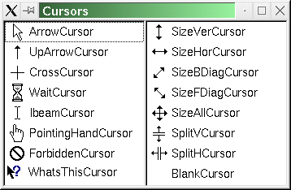

| Home · All Classes · Main Classes · Annotated · Grouped Classes · Functions |
The QCursor class provides a mouse cursor with an arbitrary shape. More...
#include <QCursor>
Part of the QtGui module.
The QCursor class provides a mouse cursor with an arbitrary shape.
This class is mainly used to create mouse cursors that are associated with particular widgets and to get and set the position of the mouse cursor.
Qt has a number of standard cursor shapes, but you can also make custom cursor shapes based on a QBitmap, a mask and a hotspot.
To associate a cursor with a widget, use QWidget::setCursor(). To associate a cursor with all widgets (normally for a short period of time), use QApplication::setOverrideCursor().
To set a cursor shape use QCursor::setShape() or use the QCursor constructor which takes the shape as argument, or you can use one of the predefined cursors defined in the Qt::CursorShape enum.
If you want to create a cursor with your own bitmap, either use the QCursor constructor which takes a bitmap and a mask or the constructor which takes a pixmap as arguments.
To set or get the position of the mouse cursor use the static methods QCursor::pos() and QCursor::setPos().

On X11, Qt supports the Xcursor library, which allows for full color icon themes. The table below shows the cursor name used for each Qt::CursorShape value. If a cursor cannot be found using the name shown below, a standard X11 cursor will be used instead. Note: X11 does not provide appropriate cursors for all possible Qt::CursorShape values. It is possible that some cursors will be taken from the Xcursor theme, while others will use an internal bitmap cursor.
| Qt::CursorShape Values | Cursor Names |
|---|---|
| Qt::ArrowCursor | left_ptr |
| Qt::UpArrowCursor | up_arrow |
| Qt::CrossCursor | cross |
| Qt::WaitCursor | wait |
| Qt::BusyCursor | left_ptr_watch |
| Qt::IBeamCursor | ibeam |
| Qt::SizeVerCursor | size_ver |
| Qt::SizeHorCursor | size_hor |
| Qt::SizeBDiagCursor | size_bdiag |
| Qt::SizeFDiagCursor | size_fdiag |
| Qt::SizeAllCursor | size_all |
| Qt::SplitVCursor | split_v |
| Qt::SplitHCursor | split_h |
| Qt::PointingHandCursor | pointing_hand |
| Qt::ForbiddenCursor | forbidden |
| Qt::WhatsThisCursor | whats_this |
See also QWidget and GUI Design Handbook: Cursors.
Constructs a cursor with the default arrow shape.
Constructs a cursor with the specified shape.
See Qt::CursorShape for a list of shapes.
See also setShape().
Constructs a custom bitmap cursor.
bitmap and mask make up the bitmap. hotX and hotY define the cursor's hot spot.
If hotX is negative, it is set to the bitmap().width()/2. If hotY is negative, it is set to the bitmap().height()/2.
The cursor bitmap (B) and mask (M) bits are combined like this:
Use the global Qt color Qt::color0 to draw 0-pixels and Qt::color1 to draw 1-pixels in the bitmaps.
Valid cursor sizes depend on the display hardware (or the underlying window system). We recommend using 32 x 32 cursors, because this size is supported on all platforms. Some platforms also support 16 x 16, 48 x 48, and 64 x 64 cursors.
See also QBitmap::QBitmap() and QBitmap::setMask().
Constructs a custom pixmap cursor.
pixmap is the image. It is usual to give it a mask (set using QPixmap::setMask()). hotX and hotY define the cursor's hot spot.
If hotX is negative, it is set to the pixmap().width()/2. If hotY is negative, it is set to the pixmap().height()/2.
Valid cursor sizes depend on the display hardware (or the underlying window system). We recommend using 32 x 32 cursors, because this size is supported on all platforms. Some platforms also support 16 x 16, 48 x 48, and 64 x 64 cursors.
See also QPixmap::QPixmap() and QPixmap::setMask().
Constructs a copy of the cursor c.
Constructs a Qt cursor from the given Windows cursor.
Warning: This function is only available on Windows.
See also handle().
Constructs a Qt cursor from the given handle.
Warning: This function is only available on X11.
See also handle().
Destroys the cursor.
Returns the cursor bitmap, or 0 if it is one of the standard cursors.
Returns a handle to the cursor.
Warning: Using the value returned by this function is not portable.
See also Qt::HANDLE.
This is an overloaded member function, provided for convenience. It behaves essentially like the above function.
This is an overloaded member function, provided for convenience. It behaves essentially like the above function.
Returns the cursor hot spot, or (0, 0) if it is one of the standard cursors.
Returns the cursor bitmap mask, or 0 if it is one of the standard cursors.
Returns the cursor pixmap. This is only valid if the cursor is a pixmap cursor.
Returns the position of the cursor (hot spot) in global screen coordinates.
You can call QWidget::mapFromGlobal() to translate it to widget coordinates.
See also setPos(), QWidget::mapFromGlobal(), and QWidget::mapToGlobal().
Moves the cursor (hot spot) to the global screen position (x, y).
You can call QWidget::mapToGlobal() to translate widget coordinates to global screen coordinates.
See also pos(), QWidget::mapFromGlobal(), and QWidget::mapToGlobal().
This is an overloaded member function, provided for convenience. It behaves essentially like the above function.
Moves the cursor (hot spot) to the global screen position at point p.
Sets the cursor to the shape identified by shape.
See Qt::CursorShape for the list of cursor shapes.
See also shape().
Returns the cursor shape identifier. The return value is one of the Qt::CursorShape enum values (cast to an int).
See also setShape().
Returns the cursor as a QVariant.
Assigns c to this cursor and returns a reference to this cursor.
This is an overloaded member function, provided for convenience. It behaves essentially like the above function.
Writes the cursor to the stream.
See also Format of the QDataStream operators.
This is an overloaded member function, provided for convenience. It behaves essentially like the above function.
Reads the cursor from the stream.
See also Format of the QDataStream operators.
| Copyright © 2005 Trolltech | Trademarks | Qt 4.0.0 |